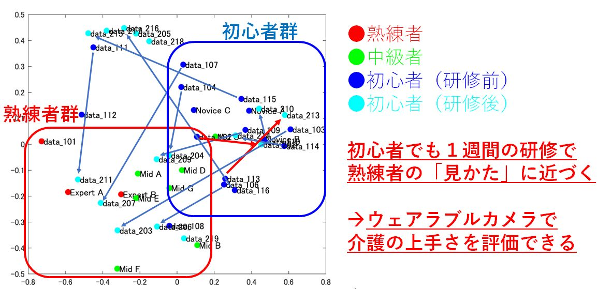
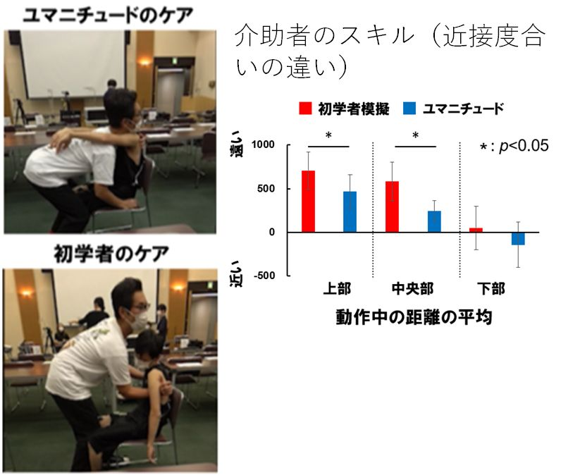

JST CREST 人間と情報環境の共生インタラクション基盤技術の創出と展開
「優しい介護」インタラクションの計算的・脳科学的解明
本プロジェクトの目的
「優しい介護」技術ユマニチュードに着⽬し 介護動作をウェアラブルセンサや⼈⼯知能（AI）等を⽤いてスキルの計測を行います．具体的には， 脳活動計測で「優しい介護」を⾏う際の情認知機構を理解，得られた情報を統合して「優しい介護とは何か」を解明， 介護のスキルを学べる⼿法やシステムを開発し．また，優しい介護が被介護者に有効かを可視化する技術も併せて開発します． また，開発した技術を実際の医療現場や介護現場において計測・実証確認し有効性を検証します．
「見つめる」スキルの解析
一人称視点映像による顔・顔間の位置関係を用いたスキル評価とスキルの解明
介護現場において，ユマニチュードの熟練者と初心者に対して，被介護者との顔間距離や角度の違いを一人称視点映像を使って解析しました． その結果，熟練者はより近くで，また顔の正面方向に向けてケアすることが統計的に明らかになりました．
見るスキル上達の可視化
一人称視点映像を用いて解析した顔間距離，角度を処理し統計解析（主成分分析）することで，ケア初心者・中級者・熟練者のクラスターが明確に分かれることが明らかになりました．また，ケア初心者が訓練を積むことで，ケア熟練者のクラスターに近づくことがわかりました． 
ケアインタラクションの解析
ケア場面のビデオ画像を解析し，ケア熟練者と初心者で，被介護者に対してどのようなインタラクションがあるか，またどの程度のインタラクションのやり取りが継続するかを計測しました．その結果，ケア熟練者はインタラクションのやり取りが，初心者の４倍程度まで達することが明らかになりました．
「触れる」スキルの解析
全身触覚センサによる「触れる」スキル解析
エキスパートはより弱い力で被介護者を触れていることを確認しました
接触による被接触者の感情解析
ユマニチュードの手法の方が被験者の感情価・覚醒度・ストレスにおいてよい影響があることがわかりました
優しい「触れる」を再現するロボットハンドの開発
良い触れ方を機械的に再現できるハンドを開発．従来のハンドと比較して快＆不活性をもたらすことを実験的に証明しました
ユマニチュードの様々な現場への展開
救急隊員に対する教育介入
研修受講者の行動がポジティブに変化することがわかりました
- 距離が近づいた（平均：859→482）
- 時間が長くなった（平均：44%→73%） (＋29%)
自閉症スペクトラム(ASD)親子関係への介入
介入の結果，親の行動がポジティブに変化しました．
- 親子のアイコンタクト時間が増加しました
- 親が子供の目線に合わせ子供の目を見る時間が増加しました
- 子供が親の目を見る時間が増加しました
「立たせる」スキルの解析
体同士の近接を測るスモッグ型センサ
「立たせる」スキルを解析するために32チャンネル （マスク含む）のスモッグ型センサを開発しました．
立たせるケアスキルの比較

ユマニチュードと従来の立たせ方の比較
ユマニチュードは重心を前方に移動させて立ち上がらせるため独力での立ち上がり動作に近いことがわかりました． ユマニチュードは身体の伸展に寄与する筋の活動が増大し独力での立ち上がりに近づきより自分自身の筋を活用していることがわかりました
最先端デバイスによるユマニチュードトレーニングシステム
複合現実感(AR) –HMDによる教育システムの構築
複合現実感(AR)を用いたトレーニングシステムを開発しました．現在多数の医療・介護系大学で実証実験を実施しています．ARにより物理的スキル（アイコンタクト等）に加え，参加者の共感度(Empathy)も有意に上昇することがわかりました．
Google Glassによる教育システム
Google glassを使った教育システムを構築しました．介護中の介護者が被介護者に対して顔や会話によるコミュニケーションを行っているか、リアルタイムに評価することが可能です．